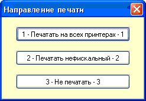
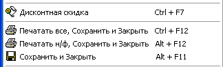
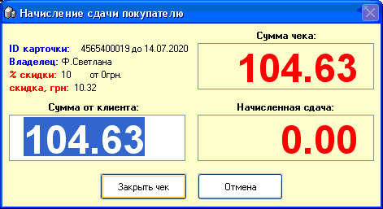
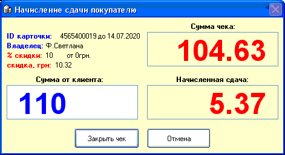

Когда завершен набор товаров в
чек, кассир должен его сохранить, распечатать и завершить, перейдя к
набору следующего чека. Существуют два способа начала завершения
чека:
1. С предоставлением клиенту скидки по
его дисконтной карте (если это карта сотрудника, который берет товары
в счет зарплаты или карта клиента, который берет в долг, то скидка может не
предоставляться - см.соответствующие разделы справки). Данный способ бывает
двух типов:
1.1. Ручной выбор
карты. Если это разрешено (вкладка "Чек" в настройках программы), то
нажав сочетание клавиш "Ctrl + F7", кассир вызовет появление
справочника дисконтных карт, в котором он с помощью стрелок на клавиатуре или
поиска, перейдет к требуемой карте и нажмет Enter. Данный способ чреват
потенциальными злоупотреблениями кассиров, поэтому лучше использовать
следующий тип скидки:
1.2. Сканирование штрихкода
карты сканером. Просто просканируйте, никаких дополнительных
действий не требуется, если карта нет в базе данных, то будет выдано
соответствующее сообщение об ошибке.
После того, как карта выбрана или просканирована,
если в настройках программы на вкладке "Чек" включена опция "При скидке
спрашивать на какой принтер печатать", то будет выдано следующее окно выбора
варианта печати чека:

Нажатием соответствующих клавиш на цифровой
клавиатуре - 1 или 2 или 3 определите, на какой принтер/принтеры отправлять
чек и с каким статусом печати его сохранить в журнале чеков. После этого,
программа перейдет к заключительному окну при завершении чека.
2. Сочетанием клавиш. Если нет
необходимости предоставлять скидку, или включена обезличенная система скидок,
автоматически рассчитываемая от суммы чека и не привязанная к конкретным
дисконтным картам (см.настройки, вкладка "Скидки"), то завершить чек можно
следующими вариантами/сочетаниями клавиш:

2.1. Печатать все, Сохранить
и Закрыть (Ctrl+F12). Все товары в чеке с признаком печати
"фискальный", или, если на вкладке "Чек" в настройках стоит опция определения
признака печати по товарной группе, имеющие установленный флажок товарной
группы "на общей форме налогообложения", печатаются на фискальном регистраторе
(если он подключен). Затем все товары чека, кроме имеющих признак печати
"не печатать", отпечатываются на нефискальном принтере. Товары, имеющие
признак "не печатать" не выводятся ни на один принтер вообще. Чек
сохраняется со статусом печати "Да".
2.2. Печатать н/ф, Сохранить
и Закрыть (Alt+F12). Все товары чека, кроме имеющих признак печати
"не печатать", отпечатываются на нефискальном принтере. Товары, имеющие
признак "не печатать" не выводятся ни на один принтер вообще. Чек
сохраняется со статусом печати "Н/ф".
2.3. Сохранить и Закрыть
(Alt+F11). Чек никакой не печатается и сохраняется со статусом
печати "Нет".
После выбора варианта печати чека появлется
заключительное окно при завершении чека:

При условии начисления скидки, в верхнем левом
углу этой формы расписывается параметры отсканированной карты и сумма
начисленной скидки.
Цифры в окошке "Сумма от клиента" будут выделены,
это сделано для быстроты - если такую сумму покупатель дает без сдачи, или
кассир подсчитал сдачу "в уме", то просто нажимается Enter и чек печатается,
сохраняется, очищается; если же необходимо произвести расчет сдачи, то просто
вводится сумма, которую дает покупатель и в окошке "Начисленная сдача" сразу
подсчитывается сдача покупателю.

Затем нажимается Enter - и чек печатается,
сохраняется, очищается, и кассир готов к обслуживанию следующего
покупателя.